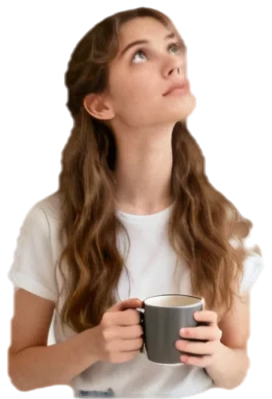
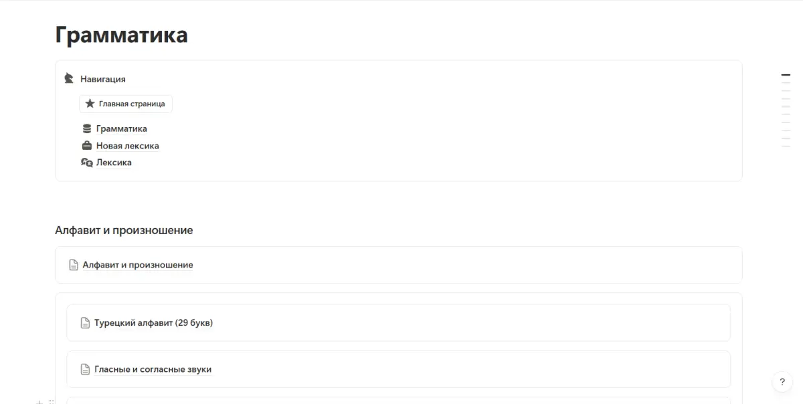
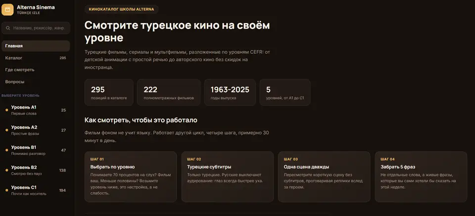

Условное наклонение в турецком
Между "приду" и "пришла бы" одна форма глагола. Разбираем какая. Без воды и без "откройте страницу 42".
суффикс вместо слова "если"
варианта: -sa и -se
реальности: может быть, мечта, поздно
лиц, и двое из них с характером
Что это вообще такое
Одно слово: gelse. В одной фразе ещё есть надежда, в другой её уже нет. Что их различает, скажу ближе к концу.
Сидишь в кофейне в Кадыкёе. Элиф пишет. Элиф спрашивает, придёшь ли ты вечером.
Ты не знаешь. У тебя в шесть маникюр.
Хочешь написать: если успею, приду. Вспоминаешь, что там было что-то про -sa. Пишешь.
Элиф молчит. Час молчит. Через час Элиф выкладывает сторис. На сторис Элиф, другая подруга и десерт.
Говоришь, Элиф, ты чего. Говорит, ты же написала, что не придёшь. Говоришь, я написала: если успею, приду. Говорит, там написано: если бы успела, пришла бы.
Говоришь, ладно.
Десерт был с фисташками.
Akşam geliyor musun?
Вечером придёшь?Yetişseydim gelirdim.
Если бы успела, пришла бы. Но поздно.Peki.
Ладно.Yetişirsem gelirim.
Вот как надо было. Если успею, приду.Если живёт внутри глагола
Условное наклонение это способ сказать "если". Русский ставит "если" отдельным словом в начале. Турецкий берёт суффикс -sa или -se и сажает его в хвост глагола. Суффикс маленький. Суффикс наглый. Суффикс решает, придёшь ты или уже нет.
Как сказали бы по-русски
Как строит фразу турок
Восемь слов. "Если" стоит впереди, как охранник у входа.
"Если" и "ты" уезжают в хвост глагола. Было два слова, стало -sen.
Глагол закрывает каждую половину. Сначала когда и куда, потом действие.
Четыре слова вместо восьми. Если сидит в gelirsen.
Если завтра придёшь, пойдём в кино.
Слово eğer тоже есть
Eğer значит "если". Но оно как шапка в апреле: можно надеть, можно нет. Суффикс снимать нельзя. Без него eğer просто стоит и волнуется.
Eğer yarın gelirsen sinemaya gideriz.
Если завтра придёшь, пойдём в кино.
Yarın gelirsen sinemaya gideriz.
То же самое. Даже короче.
Зачем это нужно
Затем, что турки живут в условном наклонении. Договариваются. Мечтают. Жалеют. Обсуждают бывших.
01.Договориться
Gelirsen sevinirim.
Если придёшь, я обрадуюсь.
02.Помечтать
Param olsa Paris'e giderdim.
Были бы деньги, уехала бы в Париж.
03.Пожалеть
Bilseydim gelirdim.
Если бы я знала, пришла бы.
04.Посомневаться
Arasam mı?
Может, позвонить?
05.Вздохнуть
Keşke burada olsan.
Вот бы ты был здесь.
Один сюжет. Три реальности.
Нажимай. Деньги те же. Дом тот же. Меняется только, веришь ты в это или уже нет.
А сериалы на этом стоят
Героиня плачет у моря. Герой смотрит вдаль. Вдали паром. Она говорит одно длинное слово. В нём весь сезон.
Keşke seni hiç tanımasaydım.
Лучше бы я тебя никогда не знала.
Как это собирается
Четыре кирпича. Порядок не меняется никогда.
Корень. gel значит приходить. Пока просто лежит.
Время. Широкое: gelir. Приходит вообще, по жизни.
Если. Последняя гласная i, поэтому -se. Выбора нет.
Кто. Ты: -n. Вот теперь всё.
gelirsen
если ты придёшьКорень, время, если, кто. Перепутаешь порядок, и получится не глагол, а инсталляция.
Широкое время за одну минуту
Реальное "если" стоит на широком времени. Без него никак. Вот весь фундамент.
Короткий глагол
Один слог: -ar или -er.
yapar
делает
gider
идёт, уходит
Длинный глагол
Два слога и больше: -ır, -ir, -ur, -ür.
konuşur
разговаривает
dinlenir
отдыхает
На гласную
Просто -r. Гласная уже есть.
okur
читает
bekler
ждёт
Треть гайда позади. Дальше гармония: кто выбирает, -sa или -se. Потом шесть лиц и три реальности.
Гармония: кто выбирает, -sa или -se
Выбирает последняя гласная. Ты не споришь. Ты смотришь.
Теперь сама гармония в руках
Шесть лиц. Три реальности.
Нажми на форму, услышишь её. Четверо живут по правилам. Двое нет: мы это -k, а они вставляют -lar перед -sa.
ben, sen, o, sizживут по правилам
bizмы это -k
onlarони вставляют -lar перед -sa
Если на часах
Вместо широкого времени можно поставить любое другое. Суффикс ляжет сверху и ничего не сломает. Вопрос один: что ты вообще знаешь.
Корень мягкий, но последняя гласная тут o, у суффикса -yor.
Гармония смотрит на неё.
Две ловушки
geliyorsa всегда с -sa. Корень мягкий, но последняя гласная тут o, у суффикса -yor. Гармония смотрит на неё. geldiyse с буквой y: после гласной суффикс приходит только с ней.
А если глагола нет
Устала. Дома. Есть. Нет. Глагола нет, а если нужно. Суффикс садится прямо на слово. После гласной подставляет y.
Yorgunsan dinlen.
Если устала, отдохни.
Evdeysen geliyorum.
Если ты дома, я иду.
Param varsa alırım.
Если есть деньги, куплю.
Vaktin yoksa sonra ararım.
Если нет времени, позвоню позже.
Hasta değilsen gel.
Если не болеешь, приходи.
Согласная, y не нужна.
Слово кончается на гласную, поэтому y.
Как сказать "если не"
Отрицание стоит сразу после корня. В широком времени -ma превращается в -maz. Да, опять характер.
Gelmezsen küserim.
Если не придёшь, обижусь.
Gelmediysen söyle.
Если ты не пришла, так и скажи.
Gelmiyorsan haber ver.
Если ты не идёшь, дай знать.
Gelmeseydin üzülürdüm.
Если бы ты не пришёл, я бы расстроилась.
Две трети позади. Дальше буква, которая не нервничает. Потом восемь мест, где ошибаются русскоязычные, и 10 упражнений.
Чередование: буква, которая не нервничает
Турецкие p, ç, t, k любят смягчаться. Перед гласной. Перед -sa нет: s согласная. Смотри.
Где ошибаются русскоязычные
Восемь мест, где мозг говорит по-русски, а рот по-турецки. Нажми на карточку, проверь себя.
Исключения и характер
Раскрывай по одному. Всё сразу никто не запоминает.
13 глаголов, которые не слушаются
Короткие, а берут -ır, -ir, -ur, -ür вместо -ar, -er. Их надо знать в лицо. Нажми, услышишь форму с -sa.
ye и de: коротко, но с сюрпризом
В "сейчас" гласная меняется: yiyor, diyor. С условным всё спокойно.
Çok yersen uyuyamazsın.
Если много съешь, не уснёшь.
O böyle derse inanma.
Если она так скажет, не верь.
Zenginsem или zengin olsam
С прилагательным суффикс это проверка факта. Для мечты нужен глагол olmak.
Zenginsem neden çalışıyorum?
Если я богата, почему я работаю?
Zengin olsam dünyayı gezerdim.
Будь я богата, объездила бы мир.
Вторая половина фразы тоже решает
С формой на -se можно надеяться, а можно уже мечтать. Разницу делает конец фразы.
Gelse sevinirim.
Хорошо бы пришёл, я буду рада. Ещё надеюсь.
Gelse sevinirdim.
Пришёл бы, я была бы рада. Но не придёт.
Даже если: -sa da, -sa bile
Добавляешь da, de или bile. Условие остаётся, а тебе уже всё равно.
Yağmur yağsa da giderim.
Даже если пойдёт дождь, я пойду.
Beni arasa bile açmam.
Даже если он позвонит, не возьму трубку.
Что бы ни, куда бы ни, чем больше
Вопросительное слово, глагол с -sa и тот же глагол в приказе. Турки любят повторить.
Ne yaparsan yap.
Что бы ты ни делала, делай.
Nereye gidersen git.
Куда бы ты ни пошла, иди.
Ne kadar çok okursan o kadar iyi öğrenirsin.
Чем больше читаешь, тем лучше запоминаешь.
Мягкие просьбы и вечные сомнения
Форма на -sa умеет не только "если". Она предлагает, торопит и волнуется.
Bir kahve içsek?
Может, выпьем кофе?
Gelsene!
Ну приходи же!
Ya gelmezse?
А вдруг не придёт?
Итог коротко
Запоминалка. Спроси себя, что ты знаешь. Форма выберется сама.
Если стоит в конце.
Eğerпо желанию.
-sa только в первой половине фразы.
может случиться
мечта, просьба, вот бы
дверь уже закрыта
после гласной и после -dı
Если стоит в конце. Eğer по желанию. -sa только в первой половине фразы.
10 упражнений. Без пощады
Ответ проверяется сразу. Рядом написано почему.
Пока ноль. Но и упражнения ещё не начались.

Разницу делает конец фразы
- Gelse sevinirim ещё надежда. Gelse sevinirdim уже нет. Теперь это слышно.
- Элиф теперь получает Yetişirsem gelirim. Вечер спасён, фисташки твои.
Одна тема закрыта. На платформе 128 гайдов по грамматике, 30 € один раз.
Вот так разобрана одна тема
Формы, ловушки, озвучка, десять упражнений. Это было бесплатно. А на платформе так разобраны все.
Учебник объясняет по-английски
Открываешь учебник турецкого. Тема: условное наклонение. Объяснение на английском. Type one, type two, type three.
Ты учишь турецкий. Теперь ещё и английский.
Открываешь другой учебник. Там объяснение на турецком. Чтобы его понять, надо знать турецкий. Закрываешь оба.
Стрик горит. Рот закрыт.
Приложение тебя хвалит. Огонёк горит. Уровень растёт. Приходишь в кафе. Официант спрашивает, будете ли десерт.
Хочешь сказать: если есть с фисташками, возьму. Говоришь, tamam.
Приносят счёт. Огонёк горит.
Я сделал Alterna Timur по-русски и по порядку
Объясняю на русском, как на этой странице. Чтобы правило дошло до рта, а не до огонька. Уровни от A0 до C1. Гайды, лексика, тренажёры, экзамены и материалы лежат в одном месте и идут по порядку.
 Твой уровень
Твой уровень
Грамматика Лексика по темам
Лексика по темам
Кино по уровнямВыбери своё "если"
Вот и пригодилось. Нажми на то, что про тебя.
Что внутри
гайдов по грамматике
58 для A1-A2 и 70 для B1-C1. Разобраны как на канале.
блок лексики по темам
Не список слов, а то, что реально говорят.
интерактивных ресурсов
Слова, тексты, диалоги, аудирование, игры на запоминание. 63 для A0-A2 и 46 для B1-C1.
блока по экзаменам
A1, A2, B1, B2, C1. По каждому отдельно.
гайдов по работе
Для тех, кто ищет работу или уже работает.
материалов по уровням
Фильмы, книги, мультфильмы, подкасты, приложения, YouTube.
1716 материалов по уровням
Открываешь свой уровень и берёшь. Один материал может подходить сразу нескольким уровням.
Последнее условное на сегодня
Три формы. Одна покупка. Нажимай.
Alterna Timur, A0 до C1
Один раз. Доступ навсегда.
Таймер, но честный
Цена после нуля не вырастет. Таймер не про деньги. Пока он идёт, -sa ещё у тебя в голове. Купишь сейчас, и следующая тема ляжет на свежую.
- Без подписки: платишь один раз
- Все уровни сразу, от A0 до C1
- Сначала вопрос? Пиши в WhatsApp, отвечу
Что обычно спрашивают
Это подписка?
Нет. 30 € один раз. Доступ навсегда.
Я с нуля. Мне подойдёт?
Да. Уровни начинаются с A0. Для начала там 58 гайдов A1-A2 и 63 интерактивных ресурса A0-A2.
Я уже B1. Что там для меня?
70 гайдов для B1-C1, 46 интерактивных ресурсов и материалы по твоему уровню.
Мне нужен экзамен
32 блока: A1, A2, B1, B2, C1, по каждому отдельно.
Всё объясняется на русском?
Да. Гайды разобраны как на канале и как на этой странице.
Gelirsen sevinirim
Если придёшь, я обрадуюсь. Это тоже условное наклонение.
Платформа15:00
Купить доступ